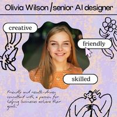
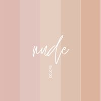

Color Themes
Color themes are organized groups of colors that work together in a design. Designers use color themes to create mood, improve readability, and give a project a consistent visual style. Different color themes can create very different emotional reactions and design experiences.
Examples of Color Themes
| Color Theme | Description | Example Image |
|---|---|---|
| Monochromatic | A monochromatic color theme uses different shades, tints, and tones of one color. This creates a clean and unified appearance. |
This monochromatic design uses multiple shades of blue with white accents for contrast and readability. |
| Analogous | Analogous color themes use colors that are next to each other on the color wheel, such as blue, blue-green, and green. |
 This analogous design uses pink, lavender, and peach tones that sit close together on the color wheel. The similar hues create a soft, harmonious, and creative appearance. |
| Complementary | Complementary themes use colors opposite each other on the color wheel. These themes create strong contrast and visual energy. |
Blue and orange are classic complementary colors because they sit opposite each other on the color wheel. The contrast is immediate and strong. |
| Triadic | Triadic themes use three evenly spaced colors on the color wheel. These themes are colorful, balanced, and visually exciting. |
This triadic design uses pink, yellow, and blue colors spaced around the color wheel. The bright contrasting colors create an energetic and balanced appearance. |
| Neutral | Neutral themes use colors such as black, white, gray, brown, or beige. These themes often create an elegant and professional appearance. |
 This neutral color theme uses soft beige, cream, blush, and tan tones. Neutral palettes create a calm, elegant, and balanced appearance without relying on highly saturated colors. |
Conclusion
Color themes help designers organize colors into visually effective combinations. Choosing the right color theme can influence emotion, readability, branding, and the overall success of a design project.